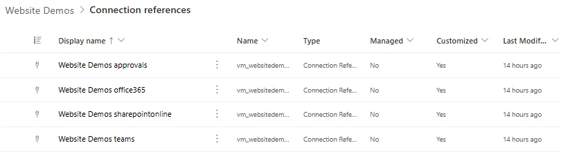

- Power Automate
- Level 6 · ALM and governance · 2 of 7
Connection references
An action needs a connection: a signed-in account for SharePoint, Outlook, Dataverse. If the flow pointed straight at your connection, production would carry your account with it. A connection reference sits in between.
Flow → reference → connection
WhatA solution component that names a connector and points to one connection in the current environment.
WhyThe same flow uses a different account in each environment, without editing it.
DemoEvery demo flow that posts to Teams uses one Teams reference.
Same flow, different accounts
Flow action: Post message in Teams
→ Connection reference: Teams
In Dev
→ your connection
In Test
→ test service account
In Prod
→ production service account

"connectionReferenceLogicalName": "vm_websitedemos_teams"In the flow's definition the action names the reference, not a person.
What happens on import
Import wizard
Import the solution into Test or Prod
A connection for each reference?
Pick or create one
Flows can be turned on
Skip
Flows stay off until it's set
Choose connections owned by the right account there, usually a service account (see Flow ownership and service accounts).
One reference or many?
| Situation | Use |
|---|---|
| All flows run as the same account | One reference per connector per solution |
| Some flows act as a different account (e.g. a shared mailbox) | A separate reference for those |
New to this? Start from the basics optional
Connection: a stored sign-in to a service; it belongs to one account.
Common mistakes
- A new reference for every flow, so every import has dozens to fix.
- Your own connection in production.
- Deleting a reference flows still use.